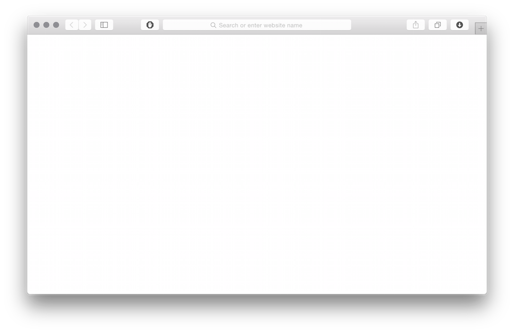

100 years after the Panama Pacific International Exposition
After the Panama Pacific International Exposition, a wave of solidarity provided great impetus for a culture of innovation
A place steeped in a rich history
Today,
San Francisco has become a magnent
a vivid emblem
We hung our work in bright spaces
For people to see our stories
We called them galleries.
There we could design a path.
A narrative.
Now this is our gallery
Where we share our content with the world.
To make space, we tile.
This removes narrative.
Not to mention It's been getting more and more
Flat
Let's try something new.
Because
Our content
deserves Space
To flourish.
To impact
To Touch
Welcome to the future.